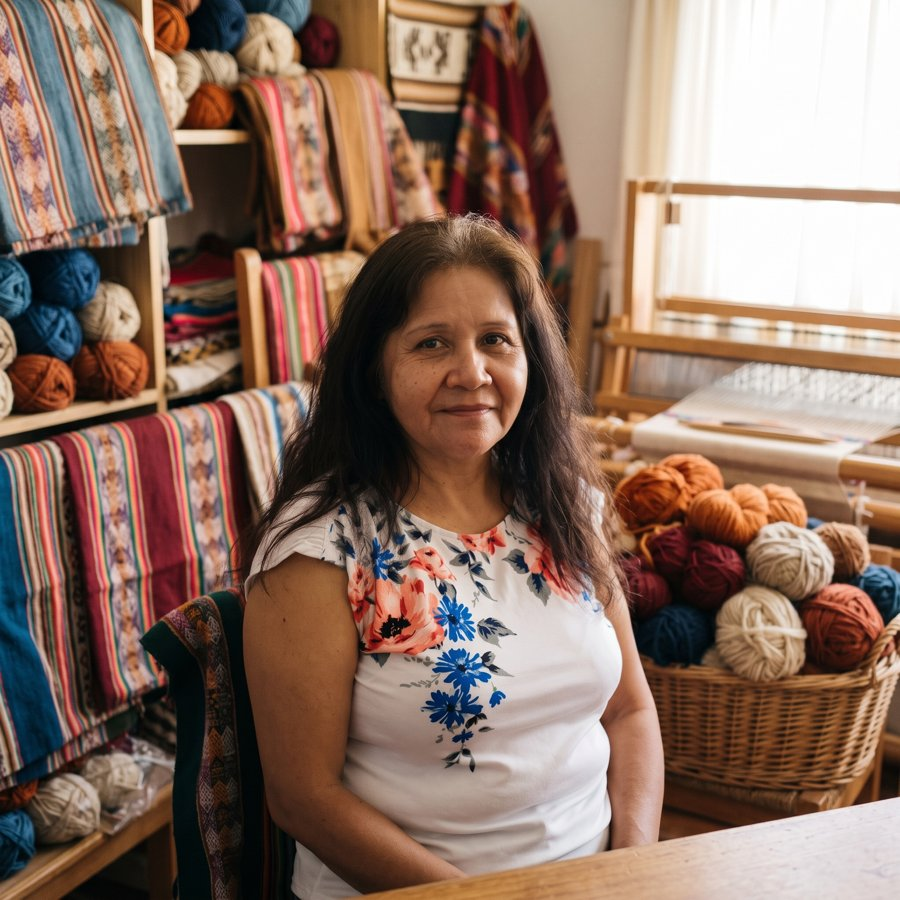

Elsa, 58 años · Tejido y marroquinería
Pronombres: Ella (She/Her)
Statement: “A veces por temor uno no se mete. Mejor cuando venga fulano que me lo haga.”
Edad: 58
Ubicación: Santa Fe, Argentina (Participante del PEIS).
Oficio: Tejido y marroquinería.
Perfil de barreras: Miedo al error (H1), Baja confianza digital, Aprendizaje de memoria (H7).
Situación laboral: Emprendedora informal.
Otros: Depende de sus hijos para subir fotos a Instagram. Anota sus contraseñas en un cuaderno de papel.
Aspiraciones
Lograr vender en La Diseña sin depender de sus familiares. Sentir que es capaz de manejar su propio negocio.
Motivaciones
- Independencia económica.
- Sentir orgullo al mostrar su trabajo.
- Complementar sus ingresos.
Necesidades
- Instrucciones paso a paso (un solo foco a la vez).
- Botones grandes y textos claros.
- Un espacio seguro para equivocarse (guía de papel).
Alfabetización digital
- Usa WhatsApp pasivamente.
- Sabe sacar fotos y mandar audios.
- Se bloquea si la pantalla cambia de lugar.
Facilitadores
- El papel (la guía) como espacio de preparación.
- Botón de «Volver» siempre visible.
- Confirmaciones antes de guardar.
Barreras
- Miedo a «romper» la app o ser estafada.
- Íconos sin texto que no comprende.
- Saturación visual (H5).